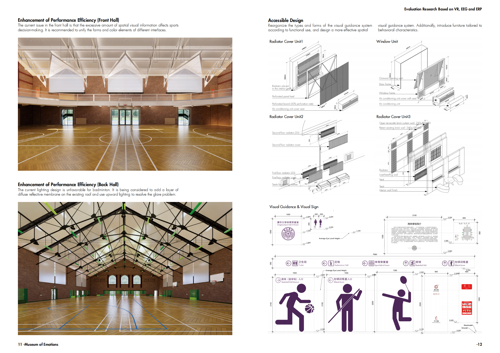
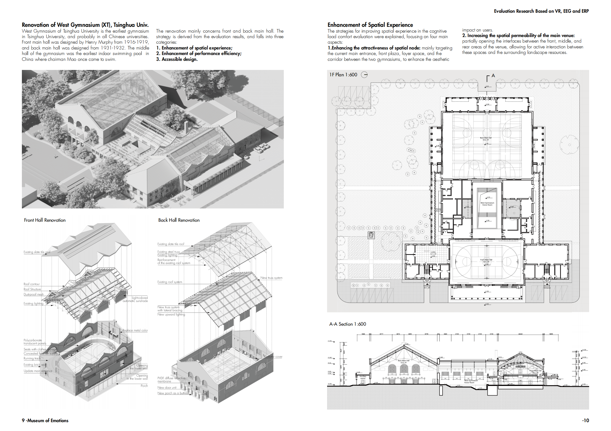
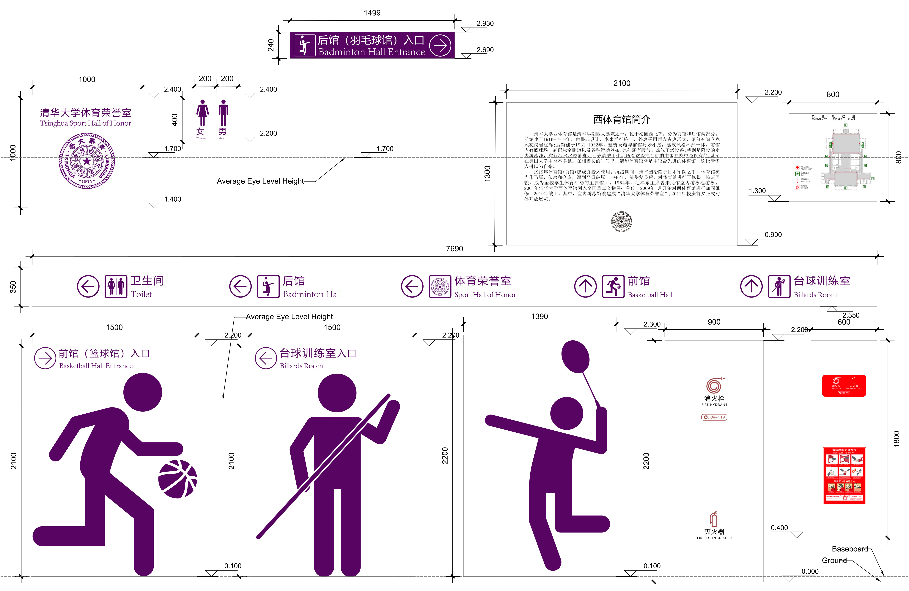
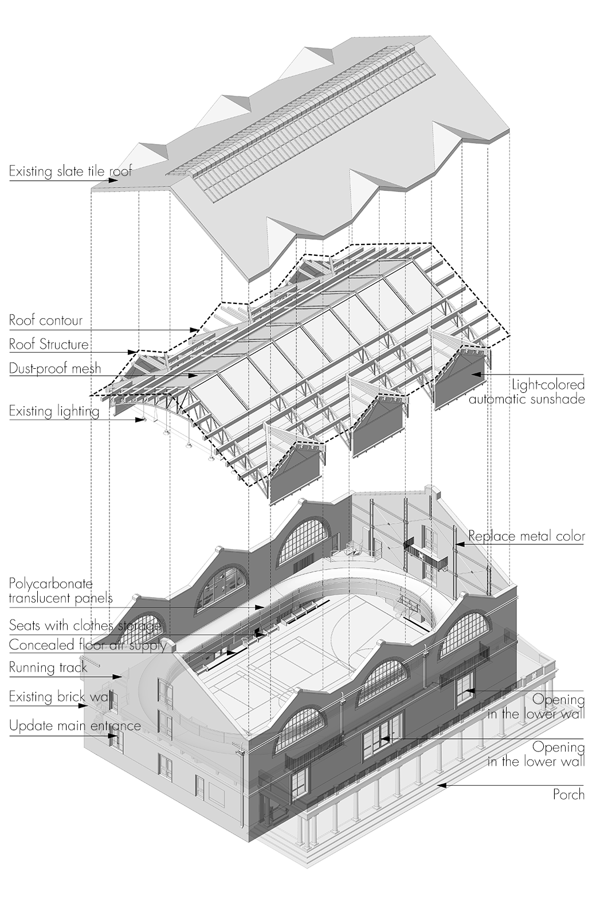
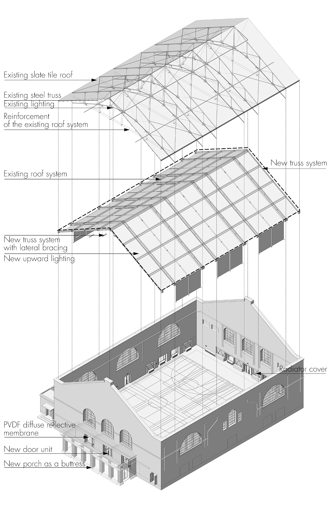
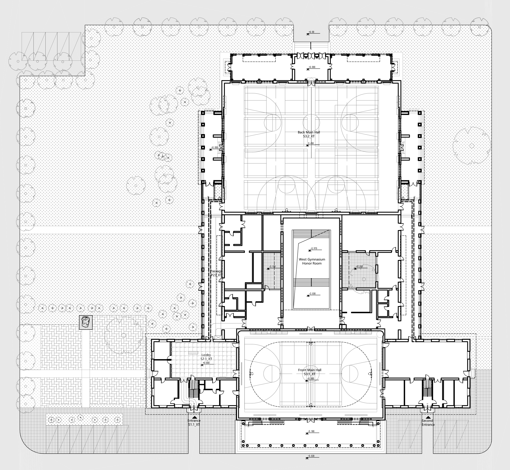
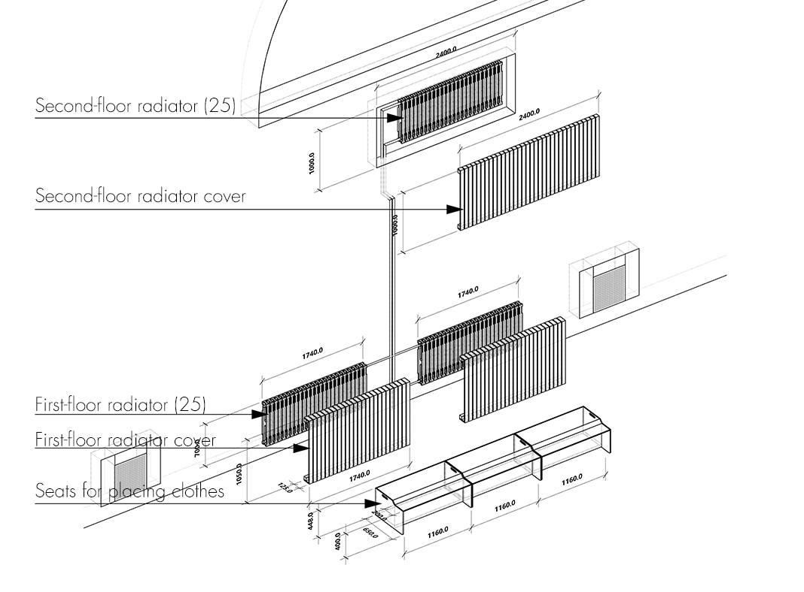
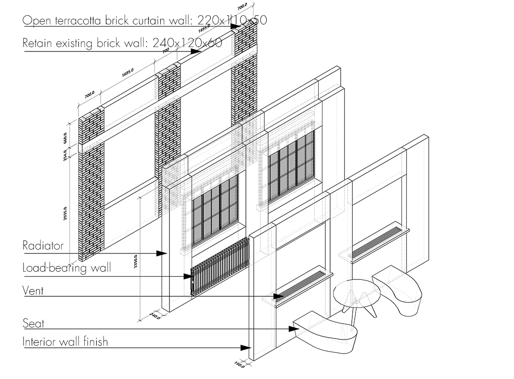
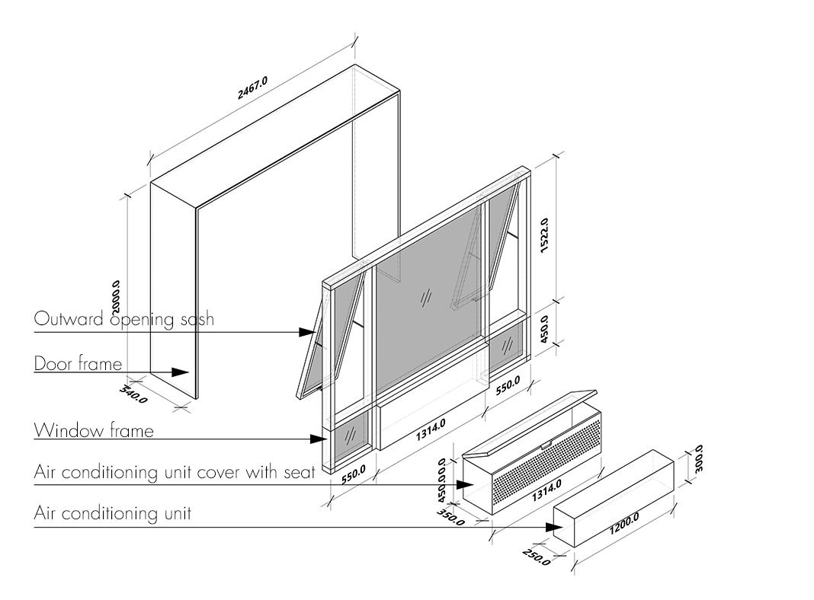

清华大学西体育馆更新设计（研究生毕设）
-
项目来源于针对清华大学校内三座综合体育馆的评估研究。根据评估结论对清华大学西体育馆进行更新改造。评估结论表明：清华大学西体育馆的入口空间、门厅缺乏空间吸引力，主运动空间色彩活跃度低下，空间开敞度低下。同时在任务执行方面，主运动空间较为复杂的视觉环境使得运动决策的效率下降。因此改造措施也分为增加节点空间吸引力，增强主运动空间体验以及改善主运动空间任务效能三方面。
1.增加节点空间吸引力
在入口靠近墙角处增设绿化带，将空调外机用灰色铁丝网罩进行遮挡设置。入口正对二层楼梯空间重新设计梯步，在踢面用反射性属性材料贴附，同时在二层天花处增设LED软膜天花照明。打通通往门厅的走廊与楼梯空间的隔墙，并在靠一层墙面位置设置文化信息区，以蓝色调为主。增加空间方向的引导性和趣味性。 门厅空间在前馆墙面重砌陶土砖幕墙，采用开放式幕墙系统，在陶土砖系统之上固定有机玻璃挂板以展示西体前馆的文化信息。将门厅东侧第一扇窗改为门洞连接走廊。重新设计门系统，将非重要的办公空间门斗与室内空间界面采用相同色彩。将通往前馆的门换为木边框玻璃门，线脚装饰形式对原设计进行简化。重新规划问询台空间位置，将通道对景让开，增强通道对景的吸引力。 连接前后馆走廊空间进行拓宽，重新设计天窗采光形式，利用柔和的北向天光增加通道空间的吸引力。同时打开部分墙体，与南侧庭院形成景观互动。根据行为调研需求，在走廊过道适当增加座椅，满足人等待和休息的需求。将自动贩卖机设置在走廊中段位置。
增强主运动空间体验方面主要措施在于：
2.增强主场馆空间渗透和色彩活泼度
针对西体前馆二层跑道空间对使用产生和认知产生的压迫，设计提议适当打开东侧和西侧界面，并打通前中馆的拱形窗，在中馆内缠绕藤蔓来减少空间压力。整体设计前馆的加固钢结构的色彩，使之更为活泼。同时在东侧墙面增设加固结构以打开东侧界面，和西操形成空间渗透。 西体后馆打通羽毛球馆与附属健身房的界面，并对健身房屋顶采用天光采光，在南北面低层打开墙面窗口，为后馆整体环境增加自然元素。同时在西体后馆南北侧新建两处有氧运动以及乒乓球运动区，其结构作为扶壁加固西体后馆的整体结构。 同时利用穿孔板覆盖暖气片位置，色彩从黄绿到蓝绿增加空间趣味性，并与室外环境取得视觉联系。
3.梳理视导系统与文化信息系统
由于西体育馆同时作为清华大学校内著名经典以及师生使用的健身设备的特殊身份，其视觉标识系统主要分为三类，一方面是展示西体在历史上的发展以及清华的体育文化，将空间作为展陈信息的对象；第二方面是引导人在体育馆中的使用，包括不同运动场馆的位置、卫生间、荣誉室所在位置等；第三方面是展示目前场馆使用的信息，包括场次的预定、教练员的介绍等等。针对以上三方面重新梳理清华大学西体育馆的视导系统与文化信息系统，形成与环境整体空间环境配合更好的设计系统。
改善主运动空间任务效能方面，主要有：
4.统合主场馆空间视觉元素
针对ERP评估当中西体育馆前馆表现出的环境压力过大，采取如下措施进行设计干预，以适当减少空间的视觉元素。 1）.将二层跑道的栏杆和防护网漆为白色，同时在栏杆扶手后增设一道白色半透明板材，在篮筐背后的栏杆扶手处增设一道白色不透明板材； 2）.将防撞垫做一体化设计，覆盖整个一层的门洞位置，同时增加防撞垫上的图案设计来平衡空间其他要素的注意力吸引； 3）.将部分暖气片埋在地下1.4m管道层内，地面围绕核心场馆重新更换木地板，并重新设计暖气片出风口。对部分剩下的暖气片进行盖板遮罩； 4）.将原有深红色的窗帘更换为白色自动遮阳卷帘，与屋顶取得视觉联系，简化视觉色彩分类。
5.改善主场馆光环境表现
针对西体后馆在EEG评估以及SD评估中表现出的光环境问题做以下调整。在原有屋面结构上设置PVDF漫反射膜材卷帘，并重新设置灯具，以向上光源照射反射材料，营造均匀照射的漫反射光环境。同时考虑到后馆使用的多情景性，保留原有灯光。 对前馆的光环境表现做如下调整：将原有拱形窗玻璃替换为特殊烧结的半透明玻璃，以减轻眩光带来的影响。在现有天窗位置增设半透明自动遮阳卷帘系统，将现有的深红色窗帘改为白色遮光帘。 -
设计类型: 人本设计，建筑设计，视导设计
项目类型：清华大学建筑学院研究生毕业设计
时间: 2024.2-2024.5
指导：庄惟敏教授，任飞正高级工程师
合作: 独立完成
主要贡献:
1.对清华大学西体育馆进行现场踏勘测绘并结合已有材料进行3D建模；
2.整合并重新设计清华大学西体育馆视导系统；
3.按照评估结论增加主空间色彩活跃性；
4.按照评估结论控制并适当削弱空间元素种类；
技能：rhino、AutoCAD、Adobe Illustrator、Adobe Photoshop、Abode Premiere、Enscape









